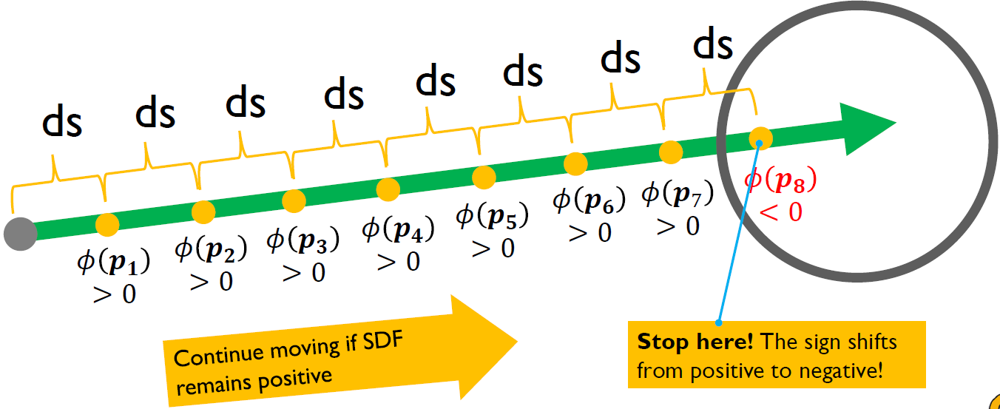
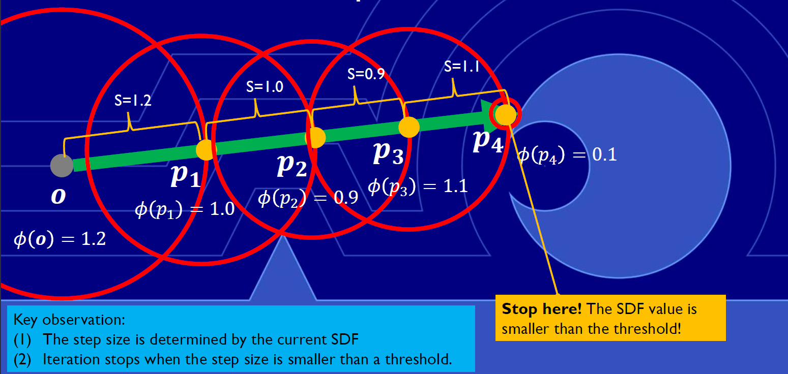
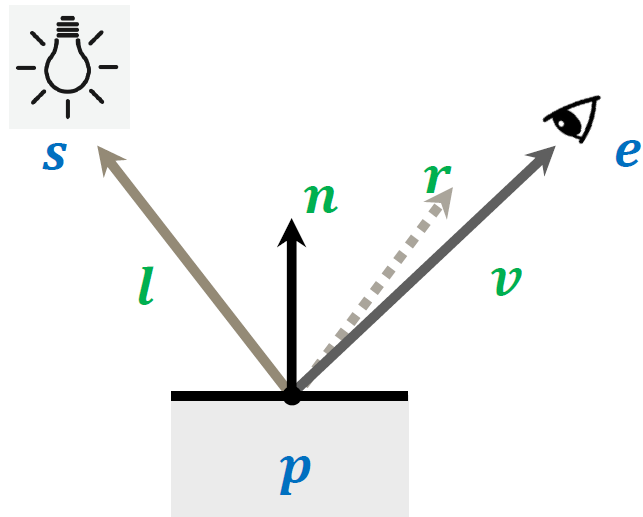

CS 8803 CGA - SDF Rendering
Recap: Ray Tracing
Basic ray tracing pipeline: Ray Generation -> Intersection -> Shading
1 | |
Previously, for each new primitive, we need to implement a new ray-primitive intersection algorithm, but now we can convert every object represented by an implicit function to SDF. That is to say, implementing a new rayprimitive function for each new SDF.
However, we don’t want to implement a customized ray-object intersection algorithm for each new object. Instead, we want the ray-SDF intersection algorithm can work for any new SDF input. So, we can assume the input SDF as a black-box function that takes a query point as input and produces its SDF as output.
Ray Marching
- We assume the entire scene can be represented by a single SDF function . For any query point p, we can get its SDF value by calling the function.
- We advance a ray step by step through a scene and use the SDF to determine the ray hits something or not.
- At each step, we ask “Is this point inside the scene surface”, or alternately phrased, “Does the SDF evaluate to a negative number at this point?”
- If it does, we’re done! We hit something.
- If it’s not, we keep going up to some maximum number of steps along the ray.

Ray Marching Pseudocode (naïve version)
Traditionally, a ray marching algorithm with a constant step size is called ray casting
1 | |
Sphere Marching
Improve the performance of the naïve ray marching by dynamically adjusting the step size along each ray. Instead of moving by a constant step size each time, we choose the current SDF value as our current step size. We repeat this process until the step size is below some certain threshold epsilon, which means that we are close to the object surface.

Ray Marching Algorithm Overview
- Step 1: Fire a ray into the scene from the camera.
- Step 2: At each step, measure the distance from the current point to the nearest surface using the SDF.
- Step 3: Move the ray forward by the distance obtained, ensuring no intersections are missed.
- Step 4: Repeat until an object is hit or the maximum number of steps is reached.
Pseudocode
1 | |
Use Phong Shading in Ray Marching

- Difference between GLSL Shading, Ray Tracing, and Ray Marching:
- In GLSL, the surface position is known for each fragment (In the fragment shader, we read the fragment position p and use it to calculate the vector l and v);
- In ray tracing, the surface position is calculated using ray-object intersection.
- In ray marching, the surface position is calculated by iteratively marching the ray and checking SDF values (In a ray tracer, we shoot a ray from the eye position and calculate its intersection with objects in the scene; then we calculate the color of the ray based on the lights in the scene using vectors p, d, and l).
- The key missing piece is how to get the normal vector from an SDF.
SDF Normal: Calculate the Gradient
We can get the normal vector of a given point p by calculating the gradient of its SDF:
- This is because the gradient of any scalar field is always normal to the level sets of that field (the implicit object surface). The direction of the gradient is pointing to the direction where SDF increases (the outward of the surface).
- We can calculate the gradient with finite difference in each axis.
Ray Tracing vs. Ray Marching
-
Ray Tracing
- Cast a ray and check for intersections with objects along the ray’s path.
- Require customized ray-object intersection implementation.
- Suitable for both implicit primitives (e.g., sphere, cube) and explicit geometric models (e.g., triangles, meshes).
-
Ray Marching
- Steps through the scene, checking if a ray has hit an object by using SDFs.
- Does not require ray-SDF intersection implementation.
- Efficient for complicated implicit surfaces, where the geometry is defined by an SDF function.
References
https://jamie-wong.com/2016/07/15/ray-marching-signed-distance-functions/